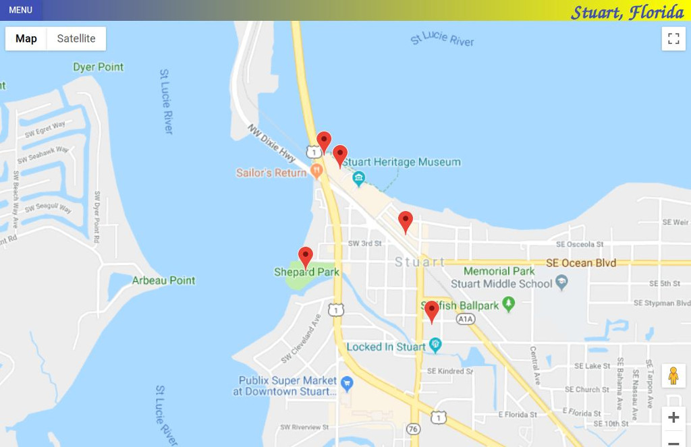

Project Overview | Neighborhood Map
Welcome to my neighborhood map! This was the final project for the Grow with Google / Udacity Front End Web Developer Nanodegree program. The assignment involved building a single page web app utilizing React and incoroporating Google Maps, plus a third party API of your choice. Features include responsiveness, filters, asynchronous API requests, error handling, semantics, accessibility, and use of a service worker.
For a full list of specifications, check out the rubric.
- Responsiveness: All application components render on-screen in a responsive manner.
- Usability: All application components are usable across modern desktop, tablet, and phone browsers.
- Location Filter: Includes a text input field or dropdown menu that filters the map markers and list items to locations matching the text input or selection. Filter function runs error-free.
- List View: A list-view of location names is provided which displays all locations by default, and displays the filtered subset of locations when a filter is applied.
Clicking a location on the list displays unique information about the location, and animates its associated map marker (e.g. bouncing, color change.)
List functionality is responsive and runs error free. - Map & Markers: Map displays all location markers by default, and displays the filtered subset of location markers when a filter is applied.
Clicking a marker displays unique information about a location somewhere on the page (modal, separate div, inside an infoWindow).
Any additional custom functionality provided in the app functions error-free. - Asynchonous API Requests: Application utilizes the Google Maps API or another mapping system and at least one non-Google third-party API. All data requests are retrieved in an asynchronous manner using either the Fetch API or XMLHttpRequest.
- Error Handling: Data requests that fail are handled gracefully using common fallback techniques (i.e. AJAX error or fail methods). 'Gracefully' means the user isn’t left wondering why a component isn’t working. If an API doesn’t load there should be some visible indication on the page that it didn’t load.
- README: A README file is included detailing all steps required to successfully run the application.
- Comments: Comments are present and effectively explain longer code procedures.
- Additional Location Data: Functionality providing additional data about a location is provided and sourced from a 3rd party API. Information can be provided either in the marker’s infoWindow, or in an HTML element in the DOM (a sidebar, the list view, a modal, etc.)
Provide attribution for the source of additional data. For example, if using Foursquare, indicate somewhere in your UI and in your README that you are using Foursquare data. - Error Free: Application runs without console errors.
- Usability: Functionality is presented in a usable and responsive manner.
- Focus: Focus is appropriately managed allowing users to noticeably tab through each of the important elements of the page. Modal or interstitial windows appropriately lock focus.
- Site elements are defined semantically: Elements on the page use the appropriate semantic elements. For those elements in which a semantic element is not available, appropriate ARIA roles are defined.
- Accessible Images: All content-related images include appropriate alternate text that clearly describes the content of the image.
- Service Worker: When available in the browser, the site uses a service worker to cache responses to requests for site assets. Visited pages are rendered when there is no network access.
- Proper Use of React: React code follows a reasonable component structure.
State control is managed appropriately: event handlers are passed as props to child components, and state is managed by parent component functions when appropriate.
There are at least 5 locations in the model.
These may be hard-coded or retrieved from a data API.
There are no errors. There are no warnings that resulted from not following the best practices listed in the documentation, such as using key for list items. All code is functional and formatted properly.
collapse ^